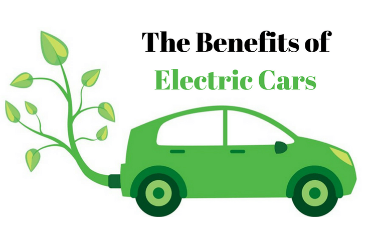

The use of fossil fuels such as petrol, diesel, and natural gas for transport releases carbon dioxide (CO2) in the air that is harmful to human and environmental health. Along with other greenhouse gases (GHG) emitted through human activities, rising CO2 concentrations are responsible for global warming. The other consequences of using fossil fuels to meet the energy requirement of human activities are depletion of this valuable resource and frequent fluctuations in international crude oil prices. In many countries across the world, governments are mitigating these challenges by reducing dependence on fossil fuel-based vehicles and shifting to cleaner modes of transportation.
It aims to achieve national fuel security by promoting hybrid and electric vehicles in the country. There is an ambitious target to achieve 6-7 million sales of hybrid and electric vehicles year on year from year 2020 onwards.In India, the imperative of shifting to electric mobility was recognised amidst the manifold problems created by fossil fuel use: their fast depletion, rising energy costs, impact of motor vehicles on the environment, and concerns over climate change. It is estimated that in 2022, India’s transport sector will be responsible for about 375 million tonnes of direct CO2 emissions, which is about 10 percent of the country’s total GHG emissions. A number of EVs were assembled and sold in the country beginning in the mid-1990s, but their use remained low due to demand and supply-related issues. These include lack of domestic manufacturing ecosystem and component supply chains, limited EV options, high vehicle costs, vehicle and battery performance issues, and inadequate battery charging infrastructure. At that time, the government was undertaking short-term and isolated initiatives to promote EVs, without the guidance of a vision document or roadmap for the EV sector’s holistic development. In response to escalating environmental problems, and to remove barriers to greater adoption of EVs, the Indian government’s Department of Heavy Industry launched the National Mission for Electric Mobility (NMEM) in 2012. Its aim was to promote domestic manufacturing and build the necessary conditions for widespread adoption of hybrid and electric vehicles (xEVs). The initiative set a target of total xEV sale of 6-7 million units by 2020. The National Electric Mobility Mission Plan (NEMMP) 2020 offered the following proposals to achieve the goal.